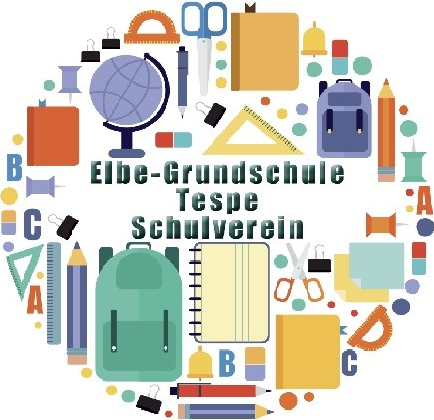

Kinderkleidung, Spielzeug und alles rund ums Kind –
von Geburt bis Größe 176
Die Nummern werden in der Reihenfolge der Anmeldungen vergeben, ihre Anzahl ist begrenzt. Eure Nummer und das Abgabefenster für den Freitag bekommt ihr spätestens am 14. November per E-Mail.
Es gibt Kaffee, Kuchen und Brezeln. Dafür suchen wir noch Kuchenspenden und helfende Hände – beim Aufbau am Freitag ab 16 Uhr und am Samstag ab 9 Uhr für Aufsicht, Verkauf und Kasse.
Kleines Dankeschön: Wer hilft, darf schon vor der Eröffnung stöbern.
Termine, Anmeldungen und Neuigkeiten des Schulvereins findet ihr in unserer App –
kostenlos, ohne Zugang und ohne Passwort, auch ohne Mitgliedschaft:
schulvereinegs.github.io
Schulverein der Elbe-Grundschule Tespe e.V. · Tel. 0152 24078596
schulverein@elbe-grundschule-tespe.de
Impressum und Datenschutz